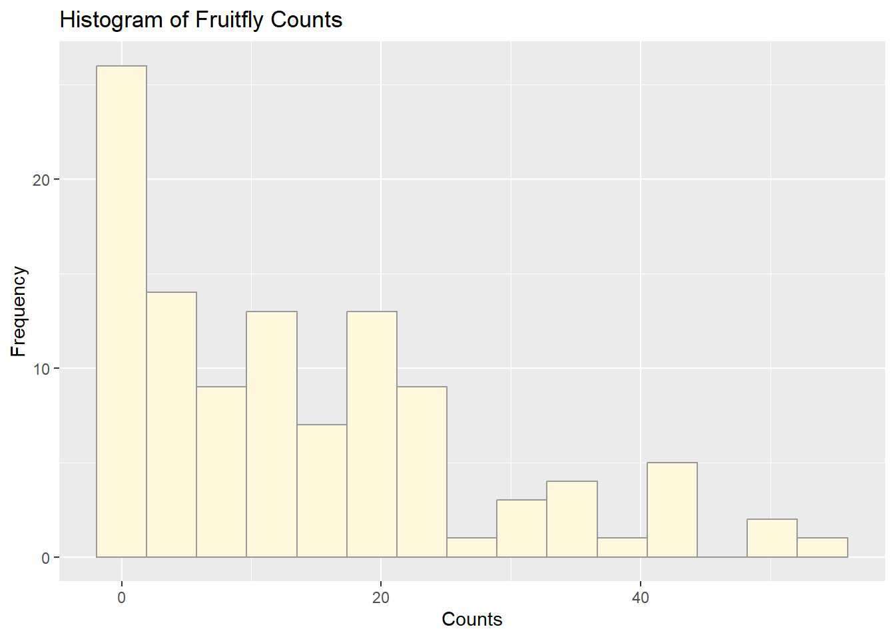
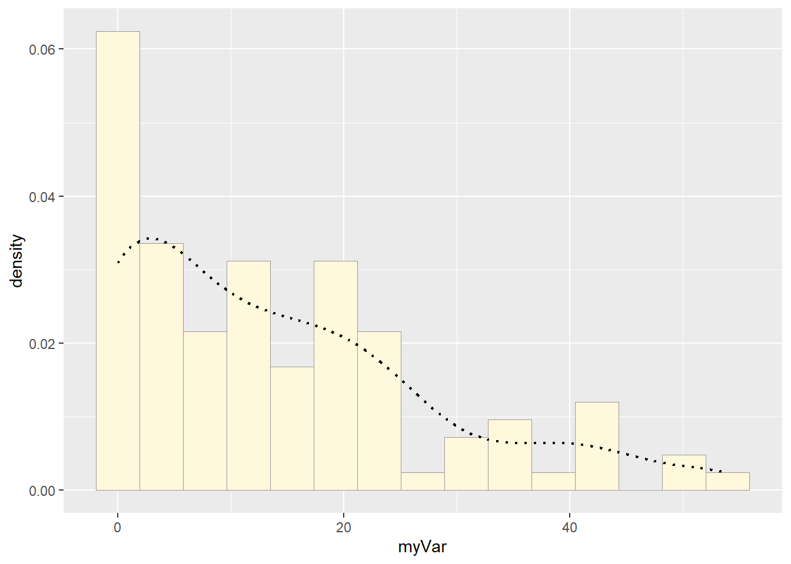
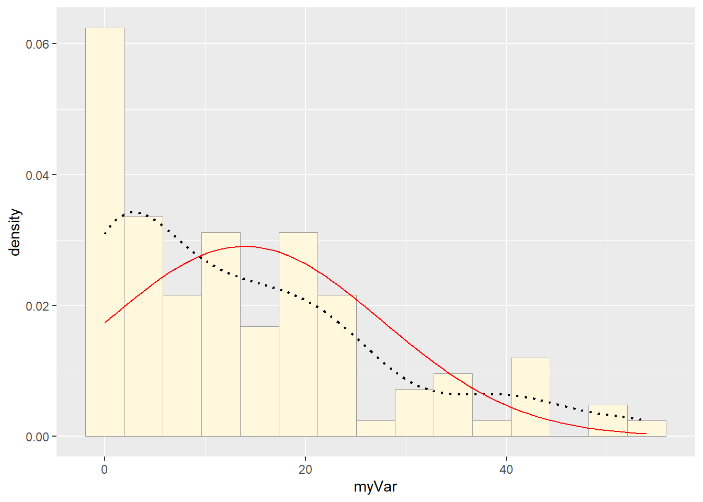
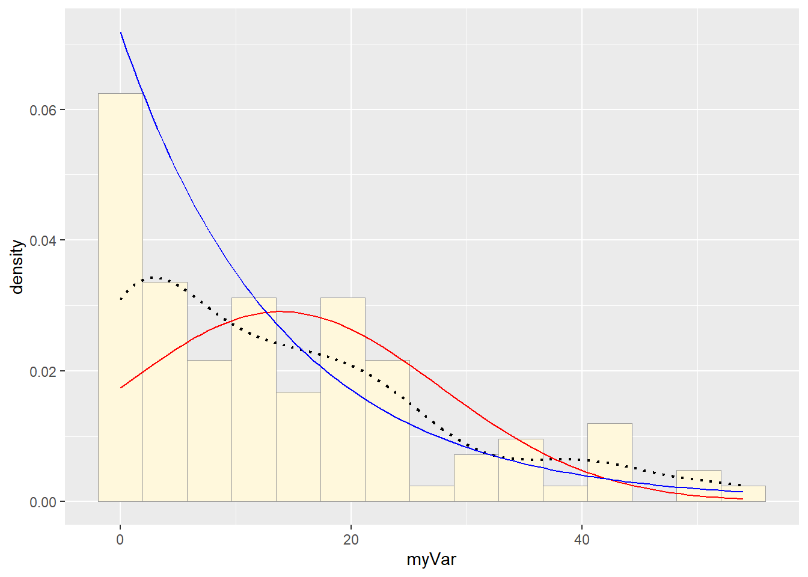
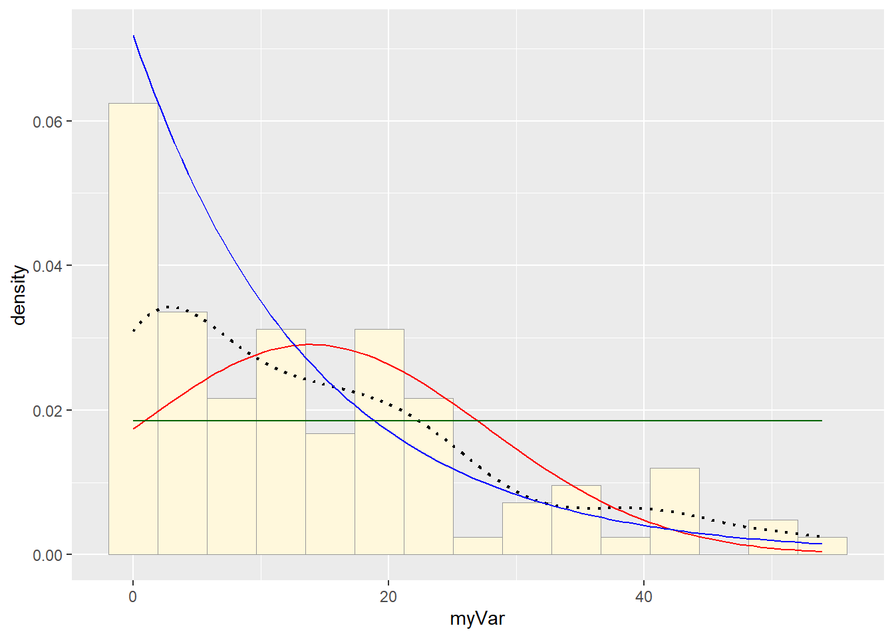
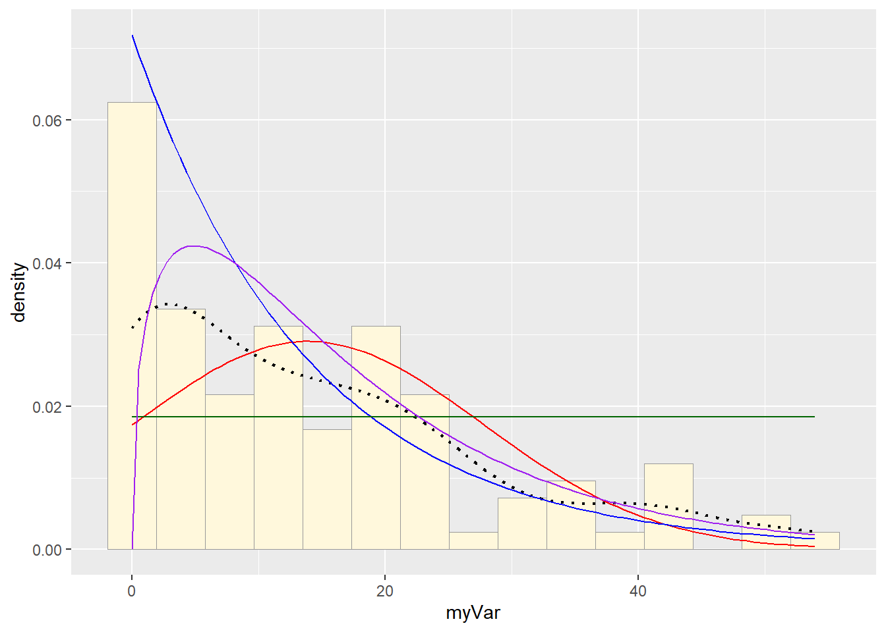
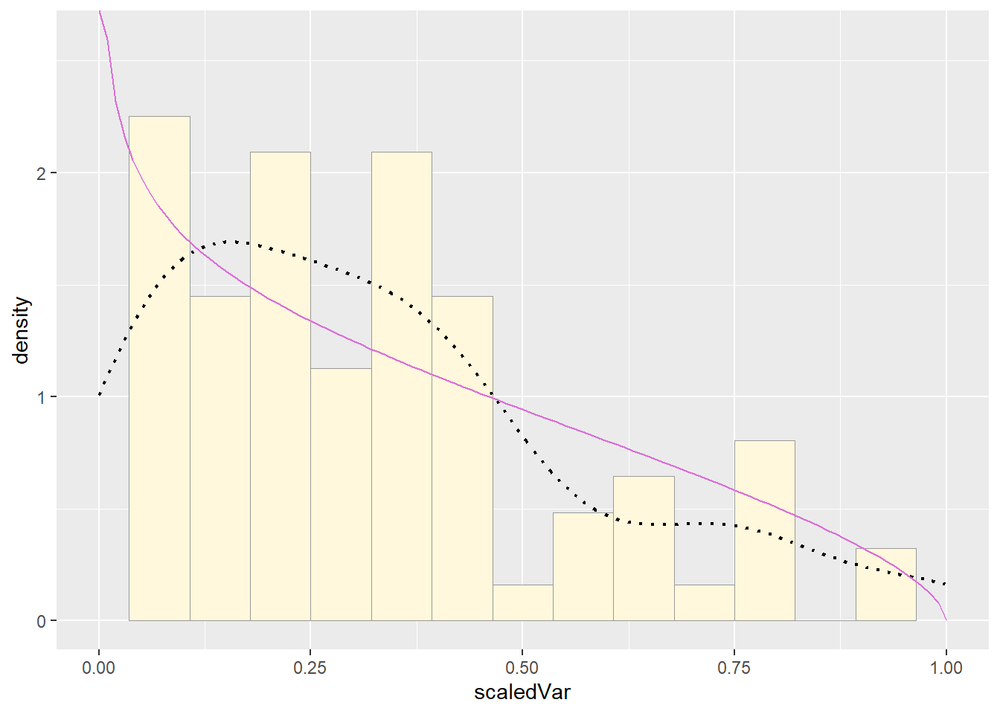
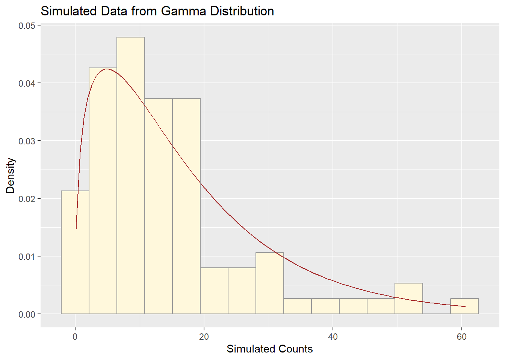
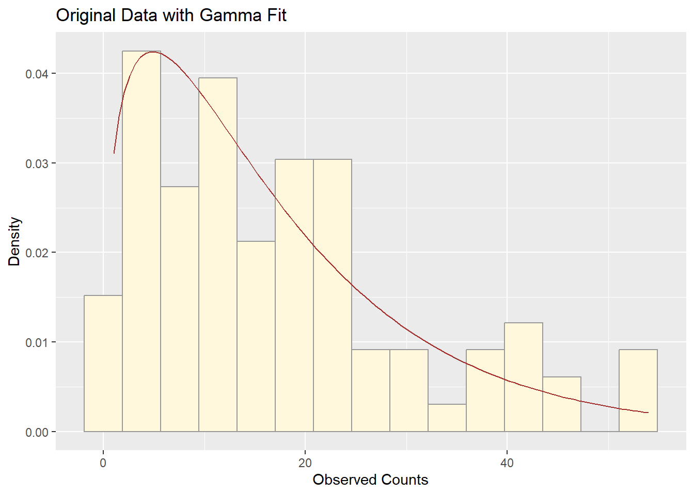

## Warning: package 'ggplot2' was built under R version 4.3.3## Warning: package 'readxl' was built under R version 4.3.3z <- read_excel("C:/Users/j/Desktop/FruitflyData.xlsx")
# Rename the column
colnames(z)[colnames(z) == "Populations"] <- "myVar"
# Check the structure and summary
str(z)## tibble [108 × 2] (S3: tbl_df/tbl/data.frame)
## $ Species: chr [1:108] "Bactrocera" "Bactrocera" "Bactrocera" "Bactrocera" ...
## $ myVar : num [1:108] 8 16 3 5 2 2 0 14 26 0 ...## Min. 1st Qu. Median Mean 3rd Qu. Max.
## 0.00 2.00 10.00 13.93 21.00 54.00# Basic histogram of fruitfly population data
ggplot(z, aes(x = myVar)) +
geom_histogram(color = "grey60", fill = "cornsilk", bins = 15) +
labs(title = "Histogram of Fruitfly Counts",
x = "Counts", y = "Frequency")
p1 <- ggplot(z, aes(x = myVar, y = ..density..)) +
geom_histogram(color = "grey60", fill = "cornsilk", size = 0.2, bins = 15) +
geom_density(linetype = "dotted", size = 0.75)## Warning: Using `size` aesthetic for lines was deprecated in ggplot2 3.4.0.
## ℹ Please use `linewidth` instead.
## This warning is displayed once every 8 hours.
## Call `lifecycle::last_lifecycle_warnings()` to see where this warning was
## generated.## Warning: The dot-dot notation (`..density..`) was deprecated in ggplot2 3.4.0.
## ℹ Please use `after_stat(density)` instead.
## This warning is displayed once every 8 hours.
## Call `lifecycle::last_lifecycle_warnings()` to see where this warning was
## generated.
normPars <- fitdistr(z$myVar, "normal")
meanML <- normPars$estimate["mean"]
sdML <- normPars$estimate["sd"]
xval <- seq(0, max(z$myVar), length.out = length(z$myVar))
stat <- stat_function(aes(x = xval, y = ..y..), fun = dnorm, colour = "red",
args = list(mean = meanML, sd = sdML))
p1 + stat
expoPars <- fitdistr(z$myVar, "exponential")
rateML <- expoPars$estimate["rate"]
stat2 <- stat_function(aes(x = xval, y = ..y..), fun = dexp, colour = "blue",
args = list(rate = rateML))
p1 + stat + stat2
stat3 <- stat_function(aes(x = xval, y = ..y..), fun = dunif, colour = "darkgreen",
args = list(min = min(z$myVar), max = max(z$myVar)))
p1 + stat + stat2 + stat3
## Warning in densfun(x, parm[1], parm[2], ...): NaNs produced
## Warning in densfun(x, parm[1], parm[2], ...): NaNs produced
## Warning in densfun(x, parm[1], parm[2], ...): NaNs producedshapeML <- gammaPars$estimate["shape"]
rateML <- gammaPars$estimate["rate"]
stat4 <- stat_function(aes(x = xval, y = ..y..), fun = dgamma, colour = "purple",
args = list(shape = shapeML, rate = rateML))
p1 + stat + stat2 + stat3 + stat4
# Rescale data
z$scaledVar <- z$myVar / (max(z$myVar) + 0.1)
# Filter out values that are exactly 0 or 1
z_beta <- z[z$scaledVar > 0 & z$scaledVar < 1, ]
# Proceed with beta fit using cleaned data
pSpecial <- ggplot(z_beta, aes(x = scaledVar, y = ..density..)) +
geom_histogram(color = "grey60", fill = "cornsilk", size = 0.2, bins = 15) +
xlim(c(0, 1)) +
geom_density(size = 0.75, linetype = "dotted")
betaPars <- fitdistr(z_beta$scaledVar, start = list(shape1 = 1, shape2 = 2), "beta")## Warning in densfun(x, parm[1], parm[2], ...): NaNs produced
## Warning in densfun(x, parm[1], parm[2], ...): NaNs produced
## Warning in densfun(x, parm[1], parm[2], ...): NaNs producedshape1ML <- betaPars$estimate["shape1"]
shape2ML <- betaPars$estimate["shape2"]
x_beta <- seq(0, 1, length.out = length(z_beta$scaledVar))
statSpecial <- stat_function(aes(x = x_beta, y = ..y..), fun = dbeta,
colour = "orchid",
args = list(shape1 = shape1ML, shape2 = shape2ML))
pSpecial + statSpecial## Warning: Removed 2 rows containing missing values or values outside the scale range
## (`geom_bar()`).
set.seed(123)
sim_data <- rgamma(n = nrow(z_pos), shape = shapeML, rate = rateML)
sim_df <- data.frame(myVar = sim_data)
ggplot(sim_df, aes(x = myVar)) +
geom_histogram(aes(y = ..density..), color = "grey60", fill = "cornsilk", bins = 15) +
stat_function(fun = dgamma,
args = list(shape = shapeML, rate = rateML),
color = "brown") +
labs(title = "Simulated Data from Gamma Distribution",
x = "Simulated Counts", y = "Density")
ggplot(z_pos, aes(x = myVar)) +
geom_histogram(aes(y = ..density..), color = "grey60", fill = "cornsilk", bins = 15) +
stat_function(fun = dgamma,
args = list(shape = shapeML, rate = rateML),
color = "brown") +
labs(title = "Original Data with Gamma Fit",
x = "Observed Counts", y = "Density")
The simulated data and the original fruitfly population counts both show a strongly right-skewed distribution. Their histograms are similar in shape and spread, with the gamma curve aligning well to both datasets. The simulated data captures the main features — central tendency, spread, and skew — of the real data.
Yes, the gamma model does a good job. This is because:
The fitted curve overlays well on the histogram of the original data.
The simulated data have a similar shape and range as the original.
Gamma distributions are flexible for modeling positive, right-skewed count data like yours.
Minor differences in the tails might occur, but overall, the gamma model is both statistically and visually a strong fit.